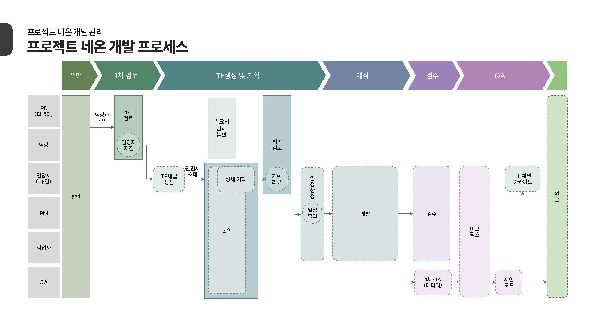

회의 후속 작업을 정리한 경험
결정 사항마다 담당자와 기한을 남겼습니다.
담당 범위
- 맡은 업무
- 개발 일정과 리소스·제작 파이프라인을 확인하고 협력사와 일정을 조율했습니다.
개발·아트·사업 회의를 운영하며 이슈 담당자와 기한을 확인했습니다.
개발 PM 업무
프로토타입 개발이 끝난 뒤 합류해 풀 프로덕션과 심사 빌드 준비에 참여했습니다.
기획·아트·기술 작업이 맞물려 있어, 스펙이 바뀌면 일정과 리소스를 함께 확인했습니다.
Asana와 WBS로 개발 일정과 태스크를 확인했습니다.
리소스 현황판과 외주 발주 리스트로 제작 상황을 살폈고, 외부 협력사의 변경 요청은 기록한 뒤 일정을 협의했습니다.

운영한 회의
개발·아트·사업 회의의 결정 사항을 모았습니다.
- Development개발부 주간 회의
- Art아트 주간 회의
- Business사업 정례 회의
- Ad-hoc비정기 회의·이슈
PM결정 사항 취합 · 후속 작업 정리
- Decision결정 사항
- Issue후속 작업
- Owner담당자
- Deadline완료 기한
회의 후 다시 확인하던 일
회의 내용은 공유됐지만, 누가 언제까지 처리할지 한 번에 확인하기 어려웠습니다.
후속 작업을 진행하려면 담당자와 기한을 다시 물어봐야 했습니다.
- Meeting논의
- Decision결정 사항
- 다시 확인담당자와 완료 기한
- Execution실행
결정 사항에 담당자와 기한을 함께 기록
회의가 끝난 뒤에도 할 일을 바로 확인할 수 있도록 담당자와 기한을 함께 기록했습니다.
- Decision결정 사항 확인
- Issue실행할 일로 정리
- Owner담당자 지정
- Deadline완료 기한 확인
할 일마다 담당자와 완료 기한을 함께 기록했습니다.
회의가 끝난 뒤에는 해당 항목을 보며 진행 상황과 변경 사항을 확인했습니다.
변경 전후
Before기록을 보고 후속 확인
- Meeting
- Decision
- Meeting Note
- Follow-up
After담당자·기한으로 후속 확인
- Meeting
- Decision
- Issue
- Owner
- Deadline
- Follow-up
회의 만족도 변화
정리한 내용
결정 사항을 이슈로 나눠 기록했습니다.
후속 확인
담당자와 기한으로 진행 상황을 확인했습니다.
회의 프로세스 개선 이후 구성원의 회의 만족도
약 70% 향상회의 규범과 후속 작업 확인 방식을 바꾼 뒤의 구성원 회의 만족도 변화입니다.
회의 이후까지
회의가 끝나도 확인할 일은 남았습니다.
결정 사항이 실제 업무로 이어지고 있는지, 담당자와 기한을 기준으로 살펴야 했습니다.